Home
AlaskaStories.com
Stories 10...
Page contents:
'06 Bou chase: hunting
'06 Moo chase: hunting again
Ice Dungeon: ice caving, a bit
Hey, this aint no bullshit...
The 06 Bou Chase...
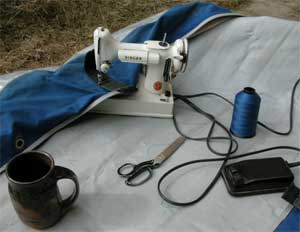
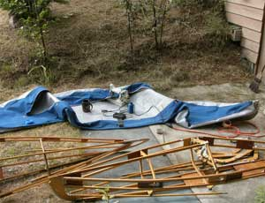
There I was, mind you, and it was desperate indeed, albeit
as usual. Desperate, is when the food gathering season gets threateningly
close before you have your gathering device repaired from last
season, as usual.
But I got my kayak repaired by replacing the hull, modified
to my standards, as you might notice, and left Fairbanks early
on the opening day of food gathering season, still desperate on
account of the weather. It was raining, hard. It had been raining,
hard, a lot. In fact, there may have been more rain in interior
Alaska this year, than any other year since the Pleistocene, or
at least since the last heavy rain stories were told.
Oh, the story value of this story will become apparent.
Wise to start an adventure in bad weather, because the weather
changes, so when you get to where the adventure gets good, the
weather is good.
Sometimes the weather does not change.
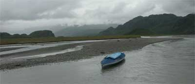
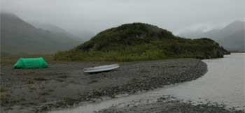
Last
time, at the same place, on the previous web page, the glaring
sun was melting the glacier so fast that the river was flooding.
Desperate. This time, a year later, only one page later for lack
of adventures, there was so much rain that the same river was
flooding, as usual. I lined my kayak around one particular outside
corner at which the river was noticeably gnawing at the bank of
glacial outwash rocks, and looked back to see the water roil over
the top, sweep out through remnants of scrappy brush roots clinging
to bare pebbles, and looked ahead for higher ground.
Being a glacier river, near the glacier, periodic flooding
is the normal condition, but that does not diminish the periodic
flood rhetoric.
I was in familiar country, alone, with fine wine and good cigars,
knowing that no one else would be there. Kings of old did not
have it so good. Did I mention that it was raining, miserably
hard? There were moments between passing clouds, when I grabbed
my not-water-resistant camera to fool the casual observer into
perceiving that it was not all as miserable as I suggest. If you
think the pictures diminish the magnitude of my adjectives, I
might stop uploading pictures, to preserve the good reputation
of my rhetorical
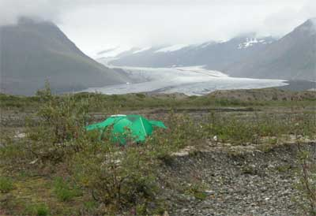
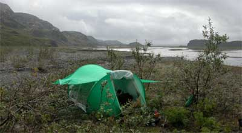
exaggerations. The
more common pictures would have shown a gray image with a few
wet bushes at the bottom of the photo, and blurry water trails
across the lens.
I may have mentioned an amusing aspect of lining a kayak up
a somewhat fast moving, flat river. When you become practiced
at the endeavor, it becomes efficient. You adjust the bow and
stern length of the lining rope by feel rather than by looking
back at the kayak, to keep the kayak properly positioned in the
changing current. So there are few interruptions to change your
view ahead, so you are trudging along the edge of the water, watching
where you are walking, with half your visual perception being
the ground, occupying the primary attention of one eye. The ground
will be traveling past you at walking speed. The other half of
your view, the river, will be sending messages to your brain primarily
through the other eye. That area of visual perception will be
noticeably traveling past you at more than twice walking speed,
with a different color, texture and light radiance. If circumstance
results in your walking on one side of the river for a long time,
or in sum a longer time, your brain is going to be twisted toward
the river side. You might want to know that before it happens
to you, so you will know to close the river side eye for awhile
when things become unexplainably uncertain. Recovery time is usually
about the time it takes to drink a glass of wine.
On the first evening, after an unusually early start of this
adventure, with only an hour more of lining up river I would be
at my magnificent high camp. I was at a brush covered rock promontory
where the river smacks full face into the rock amid confusion
as to where to turn, where I had previously learned certain lessons
about the force of fast moving water.
I camped immediately, to replenish my energy and nerve. This
upper section of what appears to be a relatively flat but swift
glacier river facilitates the opportunity to maintain the tone
of one's keen perception of the fine line between comfortable
appearances and stark fear in face of sudden disaster.
The return route, moving fast anywhere across the expanse of
glacier silt-laden water, washing in varied vectors along and
across a lacework of unseen, submerged braids, water commonly
colliding with water, at, before or beyond abrupt depth changes
between an inch and eight feet, leaves one rapidly deciding which
nuance of surface water appearance to follow or desperately attempt
to reach, all too often encountering, nose-on, broadside or somewhere
in between, the aforementioned one inch depth, effecting a sudden
stop and tipping action, and not knowing, while hastily jumping
out of the kayak into the water in the middle of the river, if
one will land in said one inch of water, or that eight foot deep
part of glacier water slightly above freezing. The less of that
upper section of river one lines up, the less one must get back
down. At the place the water smacks into the rock, I would wisely
walk back past on the bank, lining my kayak.
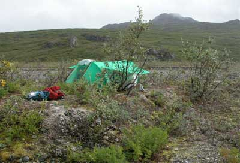
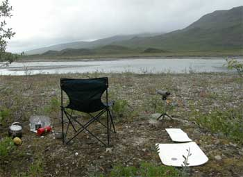
With
luck a caribou would show up at my first camp. I gave all the
local caribou ample opportunity the following day, and gave the
weather the opportunity to change. The day after that I pressed
onward in the rain, fog, drizzle and mist, zig zagging across
the river to reach the last spot one would line a touring kayak.
High camp is just below the slot the river cuts through the
terminal moraine in a single channel of violent water. Back in
the early days the broad glacier terminus spread the water out
over a mile and a half wide flat of cobbles and pebbles, where
now lichens, moss, and the heartiest of small plants and brush
are challenging the rule of rock and cold mountain air. My tent
spot is on an older patch of rocks, close to the river, that has
survived the random slashes of heavy spring run-off. During that
time willows grew more roots to better defend that spot's edges
from each next random flow of water. It can be washed away at
any time, but it is a few inches higher, drier and more secure
than anything around it.
This spot offers a flat paradise garden of intriguing new plants,
soft moss surface, and beautiful images. The world's finest gardeners,
with consulting artists and a climate controlled greenhouse, could
not create and sustain such a spot of beauty and intrigue for
the enjoyment of those wise enough to not trudge all the way out
to an Alaska Range glacier terminus ecosystem. Oh, if you are
tempted to do so, you cannot trudge there without a kayak or canoe
along the river, and the nerve. The brush, creeks, ponds and swamps
preclude walking much distance. And grizzly bears lurk in that
brush. Hungry grizzly bears, made irritable by all that rain.
I set about the arduous task of hunting caribou, occasionally
looking out my tent when the downpour diminished. The base of
the glacier is where the cold air flowing down the surface of
the ice meets the warm moist air arriving at the
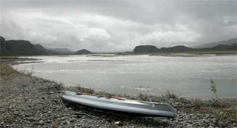
glacier,
with obvious results, especially on this trip. The downpours and
otherwise near constant drizzle did not invade the comfortable
dry spot under the roof of my Stephenson tent, facilitating the
total time spent contemplating great and weighty matters, rather
than fussing with wet stuff.
Did I mention that I had some fine wine and good cigars, on
the rare chance that I might choose to stay in camp, perhaps on
a rainy day? This Alaska hunting thing is not for the unlearned.
During lulls in the rain, I unfolded my folding chair, out
on the moss-covered deck of glacial pebbles, got comfortable,
and watched all that needed to be watched, with the aforementioned
accouterments. At one such time, three magnificent bull caribou
appeared on the closest ridge top, silhouetted against the clouds,
albeit within the bottom edge of the clouds. There was just a
bit too much distance and dense wet brush between them and I,
to entice me to do anything more than admire them, light a cigar,
and scootch more comfortably into my chair, but I made note of
their location, in case my attitude changed.
The next day, or one of those rainy days, equipped for the
rain, despite my preferences, I set out for a walk-about. The
alternative was abject boredom in the tent, looking out through
the side windows. A nearby rock bluff on the slope, on my side
of the river, was only short walk across the flat. I could gain
the bluff without walking through the dense wet brush of the hillside,
and command a better view of the valley. Within a few steps from
the tent, looking at the bluff, I distinctly remember commenting
to myself that I hoped that large dark spot was just a rock face
I had not noticed.
Before I unlimbered my binoculars, because it was close, the
rock turned into a grizzly bear.
It was only a few steps back to my tent, where I decided I
would unfold the folding chair, and watch the admirable physique
of the bear in his domain. He was intensely hoovering blueberries
on top of the bluff. I contemplated shouting at him, to observe
his reaction, but wisdom suggested that I not bother him, so that
he might return the favor. Better that he become fully satiated
with 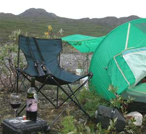
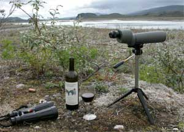
blueberries. Additionally,
he was between me and the aforementioned ridge where the caribou
had appeared. Had I been tempted to walk up to the area of the
caribou, the bear would notice a caribou hunter walking past him.
The conclusion would be obvious. Grizzly bears generally prefer
caribou over blueberries, and can walk faster than caribou hunters.
Wise to not alert the bear to the caribou for which we were both
competing, as I am certain you would concur. This Alaska hunting
thing is not for the unlearned.
When the bear occasionally shook the rain water off him, the
cloud of mist, accenting the golden tips of his dark hair in the
diffuse light of the overcast day, gave him a lingering ghost-like
image which has walked through the dreams of many people.
The bear ambled back and forth, gobbling blueberries, like
humans gobble pie at pie eating contests. After a couple hours,
he blended into the dense brush through which I would be walking
when I walked from rock knoll to rock knoll on that hillside,
looking for caribou, and eating blueberries, if a caribou did
not first walk across the flat to my tent.
That is precisely what I did the following day, occasionally
shaking the rain water off my rain coat, without the golden-tipped
hair or ghost-like image. The blueberries in the area included
a noticeable percentage that were not yet fully ripe, but where
the bear was eating, more were ripe. I laced my way among the
areas of shorter wet brush, looking for the bear. I got up to
the caribou ridge, but the caribou were not in the area.
Not having been that high on that side of the valley in previous
years, I casually walked along the ridge to its impressively abrupt
intersection with the primary tributary to this glacier river.
Whew. Apply a string of your own adjectives to the view down into
the type of narrow Alaska Range river valley that you only see
on the better post cards. I gotta get a camera that is convenient
to carry and weather resistant, but that would cut into my wine
budget. I stepped more carefully back from the slippery wet moss
on the edge of the cliff I had so casually approached.
These particular hillsides at the edge of the bare rock of
the glaciated Alaska Range are vegetated with what grows on rock
and water alone, and a few little dirt patches that produce delightful
accents of colorful flowers clustered in sheltered spots. One
cannot avoid smiling upon encountering the bright flowers.
The days passed. The rain continued, with an occasional pause,
and even a small, fleeting spot of blue sky one day. I walked
about a bit here and there. A young peregrine falcon, new to the
world, from its nesting site on a nearby cliff, circled around
me and landed on a close rock, watching me, and cackling at me,
his first view of a human. His parents flew overhead, circling
up nearly out of sight, even in my binoculars, and played, diving
on each other as they came the long distance back down to earth.
A pair of larger gray Gyr falcons, also with a nest on a nearby
cliff, occasionally cruised across the flat, perching awhile on
boulders by the glacier moraine. Marsh hawks floated and swooped
above the flat, looking for food scampering between 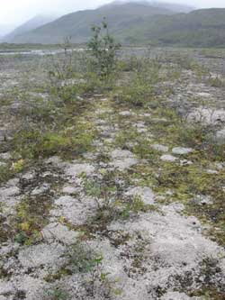
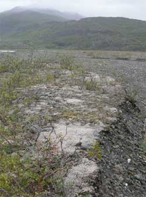
sparse
bushes. A pair of golden eagles, with a large stick nest on a
cliff by an impressive waterfall, played in the sky. At those
times when the rain was not dense, a golden eagle could usually
be seen sitting on one of the many rock knobs bordering the flats.
I was amused to watch one such eagle waddling between close rock
knolls, spreading his wings for balance, occasionally shaking
water off, preening his feathers, looking out over the river valley
and up at the sky, and generally appearing to be disgusted with
the rain.
Three large bull moose with banner antlers stood above the
brush on the far hillside where I have previously chased moose.
When they lay down, or step down into a depression or draw, they
disappear in the dense brush. When they stand up, they loom as
dark giants on the hill. A big bull moose can be standing in the
moose-high brush, eating leaves, with only its large antlers sticking
up, creating a comical show of two quizzical shapes making strange
bobbing movements in unison. One day a cow caribou came close
enough to hear the moose in the brush, and vice versa, both visible
to me on the other side of the valley. They stood intensely looking
toward each other, evaluating the noise each had made before they
each stopped to listen and look for a long time.
Four river otters scampered around on the shore one day, running
into the water and swimming back and forth in the swift current,
rolling over each other and such stuff, delighted to be otters,
as usual.
I was perplexed by a couple odd small white creatures across
the flat, for awhile, until I looked through the spotting scope
to recognize the necks and heads of two swans, above the brush
that mostly hid them while swimming on a beaver pond.
Mergansers would occasionally fly close by, upstream, and shortly
return downstream, having encountered the glacier and its lack
of fishing potential. An unusual rufous-crowned sparrow, quite
different from the bird book photos, flitted about the brush around
my tent, distracting me from the arduous task of looking for caribou.
A few caribou brush herds, with antlers arching above the low
dense mist, in the direction of the prevailing down-glacier wind,
occasionally ambled across the flat, attracting my attention,
but turned back into brush when the mist cleared.
Four large bull caribou on the far hillside, well beyond my
chasing interest, grazed and acted like caribou act, offering
a good show. Caribou are skittish. For reasons known only to caribou
minds, or perhaps not known, they sometimes make sudden movements,
running hither and fro, and back again. It is often a reaction
to bothersome insects, or illusions. One bull was methodically
sniffing the ground as would a dog, and jumping away when he smelled
something unusual, or maybe just jumping away without smelling
something unusual. Caribou are most amusing when they rise up
on their hind legs, dance a bit, and snort. Caribou think weird
thoughts, and display the results. A cow caribou walked across
the flat to the river, near my tent, then back and forth along
the river. It stepped into the river, stepped back, shook the
water off its feet, and casually walked back across the flat.
I would have done the same thing. That water is cold.
While sitting about during one lull in the rain, I enjoyed
a fine JR Ultimate Number 1 maduro cigar to accent the fresh glacier-purified
air of the Alaska Range cleansed in the mist of new-formed clouds
gently wafting along the green hillsides gracing my obscure camp
lost to the view of the world. Damn poisonous stuff that tobacco,
but you cannot tell a good cigar story without smoking a bit of
it. Way out in the mountains is a good place to smoke it because
no one else must endure the stink.
A cow, calf and small bull bou appeared on the flat near my
tent. But they saw me before I saw them, perhaps because of the
cigar smoke in front of my eyes, so they scooted farther downstream
to cross the river over to my side. I hastily scooted down to
intersect their path into the brush, and got there first, but
in the brush. They ran back to the river in the open. I 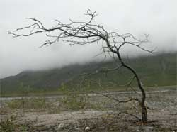
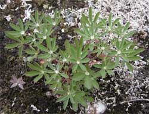
sneaked
out to the edge of the brush. But while I was crouched down sneaking
behind the brush, they wheeled and bolted back to the brush, a
bit further downstream, before I got out of the brush to see them
go into the brush. Sometimes you get the bou, and sometimes the
bou get to the brush. Back to the tent.
It was while somewhere in that brush, intent on chasing the
bou, that I glanced down in hasty passing to see a classic old
fire ring of rocks, way old. The pebbles were even with the tops
of the large rocks. Other people at long prior times had waited
for the ancestors of the caribou I was chasing.
I had appointed the adventure with truly fine wine, as of course
a gentleman would do on a gentleman's caribou hunt. A Tefft Cellars
02 Cab, and a Lamborn Family 99 Zin. You might wish to enjoy their
fine wines. And send me a bottle. Vinticulturally astute that
you are, if that long word is correctly used in this regard, you
will notice that the flavor of wine will be different in significantly
different settings. Wine enjoyed in the comfort of a room, tastes
different from the same wine consumed on the patio or at the base
of an Alaska Range glacier, equally good if not better, and to
be sought. Therefore, upon ascertaining a wine of your preference
in the common conditions of daily life, secure another bottle
specifically for a more dramatic or intriguing setting, and walk
or kayak to that setting. In the event that you do not have time
to get to that setting, send me the bottle. I will select a comparable
setting, and send you the full report. Or I will bring the bottle
if you can get me to a good setting, and I will assist you with
the rhetorical exaggerations of your report.
The river fluctuated from day to day, about 10 inches, in relation
to the intensity of the rain. This was at the head of the drainage,
still below the large rain accumulation area of glacier, and below
a high tributary valley from another glacier, but above the much
greater area of the lower valley and all its tributaries. Therefore
the rain did not swell the river as much as it did for lower areas
where bridges were washed out.
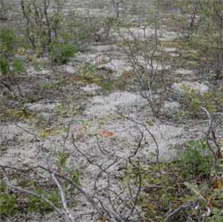
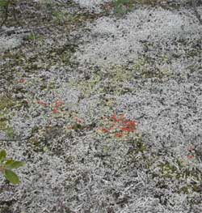
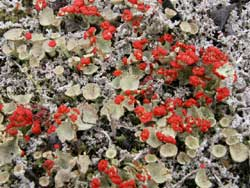
Another caribou appeared
across the flat, grazing, this time long before it could notice
me. I casually watched, while sitting in my chair, a glass of
fine wine at hand. The bou raised its head. A bull, and a fine
one indeed. I glanced about to insure that all was in proper order,
and continued watching the bou. The flat is about a mile and a
half wide, genuinely flat, with sparse stunted willow and fireweed.
The bou ambled back and forth, as bou do, but in sum walking directly
in my direction. My tent spot was where bou have crossed that
valley for centuries, from a certain feature to a certain feature,
which is why grizzly bears frequent the same place.
As the bou got closer, I carefully arranged everything that
should be arranged, kneeled down behind my green tent among a
few green willows, and waited, occasionally looking around the
end of the tent, behind one of said willow bushes. All was in
good order. The bou would arrive at the river, less that 100 feet
away, on open flat ground, with my kayak conveniently near the
river.
For the story value, rather than easily shoot the bou
on the other side of the river, I would let it cross to my side
and walk around one end of the tent. The bou was noticeably ignorant
to my presence. As the bou leisurely stepped down to the river
I ascertained that it would walk past the south end of the tent,
so I positioned myself appropriately, watching. The bou walked
into the shallow part of the river as I slowly moved my head back
behind the tent to prepare for the close shot. Curious to watch
the bou swimming the deep swift river, a couple seconds later
I looked back around the end of the tent.
All I saw was the white rump of the bou in the far distance
running down the other side of the river, as fast as bou can run.
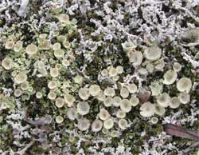
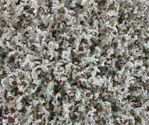
My
plan proved to be flawless. I got the story value just as I intended,
unaltered by any inconvenience of shooting the bou and having
to do all that subsequent work. The bou can verify my story, and
its value to him.
I laughed robustly.
When you try to get it all, you can easily get nothing.
It may be a gaunt winter with an empty, frost-encrusted freezer.
The bou may not have known precisely what was amiss, but suddenly
recognized that something was amiss. Did I mention that
caribou are skittish, and practice sudden movements, more sudden
than the reaction capabilities of caribou hunters?
The bou kept running down that long river flat for as long
as my good binoculars could see him. He may have figured out precisely
what was amiss.
Back to the folding chair and the glass of fine wine, watching
an occasional pair of glistening white swans glide across the
valley between beaver ponds and light green marsh grasses nestled
in the higher brush.
But the days had passed. The camp larder was lean. The hunting
committee could not be trusted to replenish the larder from
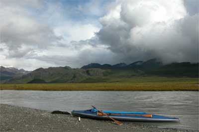
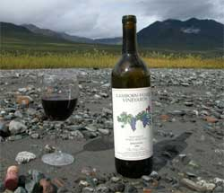
local
fare. Their stories nourished only the ears, leaving the legs
weak. No more caribou walked across the flat to the tent. It became
time to leave. Well of course that morning was pouring rain harder
than any other day. Loading the kayak in the rain was the task
at hand.
No sooner had I completed the wet sopping task, the clouds
parted, the sun came through a reasonably sized opening, a bright
rainbow sprung forth from the glacier, arched over to the radiant
green hillside, and the valley was illuminated in glory.
The river was running fast with all the rain, cutting new channels
among the braids. The first few miles went by quickly, albeit
with seven full-crunch stops on barely submerged gravel bars,
more than I would prefer. There was the delay of carefully lining
down past the water that frighteningly smacked into the rock.
A couple errant clouds drenched swaths of the route with nearly
blinding downpours, but they passed within minutes. The down river
water time was two and a half hours to the road, not counting
some leisurely stops to stand around absorbing the spectacular
view, drink fine wine, the Lamborn zin in the photo, eat convenient
blueberries and nagoon berries, and marvel at the concept of the
planet.
There we jolly well have it, again.
The 06 Moo Chase...
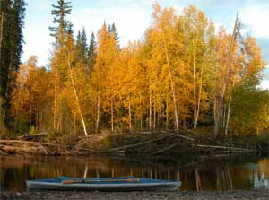
There you were, mind
you, and it is desperate indeed, albeit as usual. If it were not
desperate, you would be doing something worthwhile, instead of
reading the same old stuff at the same old website. Somebody out
there, make a website worth reading! Save us.
Whisky. I am drinking whisky at this very moment. Islay. The
story could not otherwise be told.
Well, of course it was the same place as last time, Secret
Creek. Just watch these animals awhile. They are creatures of
habit. They graze in the same bogs. They drink the same whisky.
They tell the same stories.
But this time I was only two hours up creek from the road,
dang near spitting distance, barely started. I had no few bottles
of fine wine, as you might notice in the evidence photos, and
two weeks of gourmet food, the folding chair, cigars and Islay
whisky, the same stuff I am drinking right now. The weather was
wonderful and the fall colors starting into full color.
I was out in the open on a wide gravel bar, in the middle of
an effort to get the kayak around a current-cut corner with deep
fast water. I looked up only by chance, still trying to get the
17 foot long kayak in line with the 7 foot sharp turn in the fast
current that was pushing the kayak bow away from me. Things were
not going well. It was not a time to be inconvenienced with a
bull moose up creek walking down creek right toward me, in full
view.
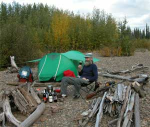
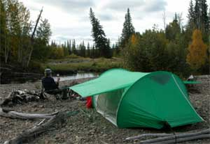
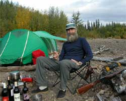
First I had to fumble around to get the kayak around the corner,
against the current at an angle, and pulled up on the rocks enough
to keep it there, in full view of the moose. The moose was still
far enough away to not yet notice me, if I did not move around
too much. Then I had to weigh the entirety of my two weeks of
plans and provisions, only two hours from the road, in contrast
to my gaunt freezer full of frost and no caribou. It was desperate.
If I returned back to town the next day, I would have to share
the wine with friends, and some of them are a questionable lot.
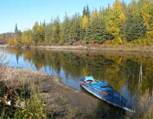
Well, one thing for
sure, I learned my lesson on that last story. Whatever I decided,
I was not going to stand there in the open and expect the moose
to walk right to my kayak before I made a decision. He was already
on my side of the creek.
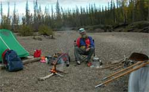
I squatted down, attempting
to look like I was not out in full view on a gravel bar near the
middle of the creek. I rummaged through the stuff in the kayak,
and found my rifle, under 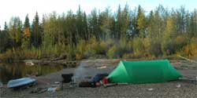
the
folding chair, and I kinda duck-waddled across the gravel bar,
over to the tree line where I could get out of sight before anyone,
especially the moose, saw me duck waddling in full view out on
the gravel bar.
Okay, so then I was at the tree line beside the creek. The
moose was at the same tree line, up creek, just a smidgen too
far to shoot, slowly walking in my direction, eating leaves along
the way.
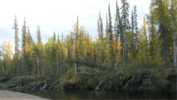
Having by then forgot
the two week plan, remembering that the freezer was encrusted
with frost, and little else, especially no caribou, I sneaked
into the woods a bit to be completely out of sight of the moose,
and be where I should be when the moose got there.
But what if the moose wandered farther into the woods, away
from the creek? Still fully cognizant of the caribou story, I
carefully sneaked closer to the moose, and closer, and closer.
After a lot of very careful and very slow sneaking through
the woods, just about the time I got to where I had last seen
the moose, and there was no moose, I remembered that I had remembered
the caribou story. Yet again proof of the dismal failure of the
American public schools, especially regarding use of the English
language. Tell these victims of public education a caribou story,
get them to read it, and even make them write it in plain English.
What do they do? They sneak into the woods chasing a moose with
a caribou story.
Go ahead, review the moose stories. Do they not state in plain
English that it is not possible for a human to sneak up on a moose
in the woods, on account of those two huge fully articulated independently
pivotable parabolic amplifying moose ears that can hear the sound
of even the smell of a human wafting past the softest moss? Well,
I was so confused trying to guess what my English 103 teacher
required me to know about what she said Charles Dickens really
meant with his words that did not state what she stated, and therefore
that which Charley did not mean in the stories he wrote, that
I could not understand what I meant in the moose story, and so
I thought that the caribou story was useful knowledge for the
moose. (Note to self:
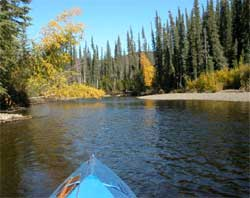
Remember
this moose story for the next moose chase. Do not apply it to
a caribou.)
Back to the two week plan, quite fortunate for this story.
The wine survived the threat of having to be shared with a questionable
gaggle of Alaska sorts.
I trust that you carefully noticed the above photo of that
guy with the cigar, uploaded only so he can keep telling his cigar
stories. Good thing he did not light it.
As you might notice in one of the above photos, I came around
a corner and caught an entire row of trees drinking from the creek.
A rare photo. The other trees usually warn their colleagues when
humans are around.
Back and forth and back and forth up creek. Secret Creek is
a meandering creek. After great effort walking around large and
convoluted loops, crossing the creek a few times, you often arrive
at where you can see through a thin band of trees to see where
you were before all that effort, having traveled a very short
distance as the raven flies.
Ravens, Feruginous Rough Leg Hawks, Goshawks, Gyr falcons,
Merlins, Marsh Hawks, Great Horned Owls, Bald Eagles and other
fellow carnivores of the feather drifted by, and sometimes commented
on my presence. Not the most secure neighborhood for squirrels
and mice, but well populated.
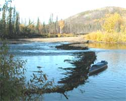
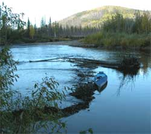
Things
were way different from last year. Big rain summer in interior
Alaska. High water. All but two of the beaver dams had been completely
washed out. But while they where there, and had reformed gravel
bars that do not so easily wash out, the flow of the creek was
noticeably altered in some places. Things change.
The two similar photos perhaps to the left of these words,
are of the same beaver dam, last year and this year. It is one
of the two not completely blown out this year. Last year it crossed
the entire creek, with a slot in the middle. This year only a
remnant was left at one end.
A lot of wolf tracks, and even more bear tracks. I was comforted
by the small size of the black bear tracks.
Back and forth, around the loops, across the water, around
the next loops. One can flowery-up these Alaska stories to make
people imagine leisure in paradise. But it is really just back
and forth, trudging onward, like in real life.
There was the matter of coming across a mammoth leg bone fragment
on the gravel beside the creek. To carry or stash an extra 7 or
so pounds? I decided to carry it to the first camp, and stash
it there for the return trip.
I reached my favorite First Night Secret Creek Camp, the first
camp pictured above the second camp photos. Some years I have
not reached it on the first night. No one had been there the entire
year. All the firewood, birch bark, tent anchors, flat table stones
and twigs were just as I left them. I moved in, set up the tent,
unfolded the chair, poured the wine, and leisurely sat there in
paradise viewing the fall colors and even some late
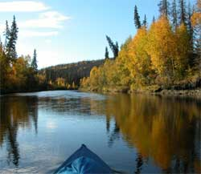
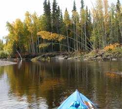
flowers. A hawk sat
in a nearby treetop looking down at me, and screeched now and
again, just like you hear in the outdoor movies.
Later I built a campfire, for the image, whupped up some gourmet
grub, poured more wine, and sat around some more. The beaver came
out to slap the water a few times, as usual.
Among others, the better bottles of this year's moose chase
vinticultural selection were a Horizon's Edge merlot, Lamborn
Family zin and of course a Tefft Cellars cabernet. The cigars
were a modicum of JR Ultimate Number 1's, mostly maduro. The emergency
Lagavulin 16 Islay Scotch was stocked in the event the hunt lasted
longer than the wine cellar stocks in the kayak hold.
Along about 4:AM in the early morning, not yet light out, the
beaver did the usual wake-up-the-neighbors thing, like they do
every night. This time they were noticeably persistent, invoking
a lurking suspicion. Then I heard a sound that was not a beaver.
I was out the tent door, flashlight in hand, quicker than you
are reading this sentence, ready to defend my tent, kayak and
turf, from bears or mammoths.
There in my headlamp, a few steps away between me and my kayak,
were three of the gray wolves who had made my acquaintance at
the same spot last year. They were rather surprised by the sudden
nature of my full face appearance in close proximity. They stood
there staring at me, with an apologetic appearance of blaming
the rude awakening on the beaver. We chit-chatted awhile, having
not seen each other in a year. Then they walked away behind the
nearby bushes, feigning
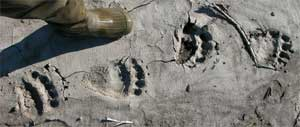
casual
disinterest. I stood there awhile longer, enjoying the pleasant
morning air, unlike the tent air, then looked back at the bushes,
where two wolves had come back out on one side, while the other
wolf had circled around to the other side, looking at me, still
considering their options with the intruder. I retired, having
once again stood my ground against what might become mammoths
if in the future English teachers fool their victims into believing
the sorts of things I was told Charles Dickens really meant. Desperate
indeed.
On the morrow it was back and forth, trudging up the creek.
There were a few moose tracks to entice me onward, dang few, and
not even fresh enough to retain any warmth or smell. You can smell
fresh moose tracks. I was less comforted to come around a corner
and encounter really big black bear tracks, bigger than the ones
in the photo, still fresh. The hair on the neck of my .44 bristled,
but I trudged onward, glancing into the brush more often. There
were more black bear tracks this year, than any prior year. They
were doing what I was doing, trudging along the creek looking
for something to eat, often glancing into the brush.
The long desperate day, as usual, with nary a moose to be seen,
brought me to another camp in paradise. Camp paradise is flat
and dry. I became uncertain as to the effects of the genuinely
luscious wine I was enjoying in camp that evening, casually looking
over my shoulder on occasion, for moose or mammoths. There was
a bit of a splashing noise back down at the nearby bend in the
river, just seldom enough to repeatedly disregard it after wondering
what the heck was making that little splashing noise. It was different
from the occasional gurgling of the wine 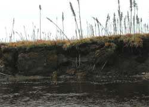
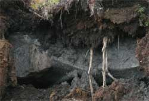
sloshing
from the bottle, into my glass. After awhile, in comfortable camp
shoes, rifle on shoulder, full wine glass in hand, I ambled down
there to see just what-all this was about. I circled back into
the woods, and approached the spot at the top of the cut bank,
about six feet above the creek.
I was looking down on about 20 chum salmon in shallow clear
water, doing the spawning show in a classic salmon spawning bed,
just like in the fisheries movies. In fact, the show was so good,
I stood there for an hour or so. There were groups of 2 to 6 salmon
at any spot, holding their position against the moderately mild
current. Every minute or so one of the males on the stage would
bite at another male, so they would both get out of line with
the current, drift back downstream a ways, then turn around and
swim back into position, next to each other, or nearby. While
they were away a few seconds, nearby fish would sometimes swim
in to take their positions, and stay with the group until another
biting attack would change the line-up. Every once in awhile a
female would turn flat side up and suddenly flop up and down through
the water, trying to lay eggs, then return to her position. The
show was as good as one of those nature movies on TV, with a really
big screen.
On the morrow it was back and forth, trudging up the creek.
Nary a moose to be seen. Besides the occasional small bear tracks,
I encountered another set of really big tracks. Now there were
two sets of different large bear tracks, one going up creek, and
the other going down creek. I was surrounded.
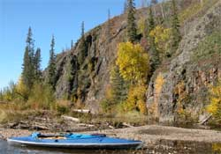
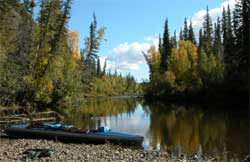
I
passed several ice lenses exposed in the creek banks. Notice the
two white vertical sticks in front of the ice lens, in the photos
of the dirt cut bank somewhere near these words. The bank is about
15 feet high. The top is a moss covered black spruce bog that
burnt a couple years ago. The thick moss covers and insulates
a broad flat of ice that is several thousand years old. If I were
drinking martinis, I would have chopped into the clear ice, and
told you the story of the martini. Give them a great ice story,
and these wine drinkers are useless.
I was traveling more efficiently this year, after years of
practicing the back and forth routine. I reached the place I had
prior stopped two different years. This time I kept going. It
is one thing to not remember what is around the next bend that
looks like all the other bends. It is another to see what looks
like all the other bends, for the first time. Above the previous
high point, each bend that looks the same was a new adventure.
I reached a near-vertical rotten rock cliff that rose high
above the creek. Well of course I foolishly climbed it, scaring
myself, but not nearly as much as I was scared coming back down,
unable to see my footholds, clawing at the loose rock, my rifle
constantly slipping off my shoulder. Desperate, but I survived.
The cliff rose well above the trees, but the top allowed only
a view of the trees, no moose, and my kayak below.
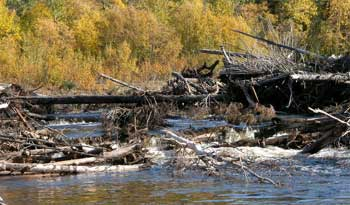
Shortly thereafter
I was faced with a low waterfall tumbling through a log jam, where
the creek had cut off a loop, at a thin bank. A kayak could not
go through it. I walked up through the trees beside the log jam.
On the other side of the waterfall, the creek looked even more
beautiful, and the grass was greener. Well of course I had to
get there.
The old loop that curved away from the waterfall still had
a bit of water, so I gave it a try. It was a long double loop,
with some deep pools, but with some very shallow pebbly drops.
I dragged my kayak over the moist pebbles, concerned that I might
foolishly shoot a moose above that area, and have to trench my
way back down, or carry the moose meat at each shallow spot. On
I pressed, because it was just so beautiful up past the log jam,
and I had not been there. No one else had been there, perhaps
since the early days of gold prospectors walking every creek in
Alaska.
I am not suggesting that this was an excessively leisurely
adventure, but that evening, I was to be seen walking away from
camp, wearing camp shoes, rifle on shoulder, full glass of wonderful
wine, variously following the creek bank and strolling through
the open birch and spruce forest, occasional autumn leaves drifting
down around me, enjoying solitude in a paradise wilderness, as
usual, sincerely hoping that I did not encounter a moose. If I
shot a moose that far up the creek, above the upper shallow pebble
sections, my leisurely attitude would be seriously affronted.
Eleven rowdy mergansers showed up that evening to put on a
rowdy merganser show in the creek beside the tent. They were high
adrenalin vaudeville actors, and they knew they had an audience
sitting in a folding chair. They rapidly paddled around in all
directions, then dove for fish, came up looking at each other
and directly at me, noticeably expecting applause, not getting
any, dove after more fish, and sporadically padded as a group
upstream or downstream. A herd of woolly mammoths could have walked
past behind me, and I would not have noticed. Maybe they did.
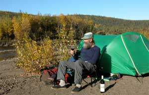
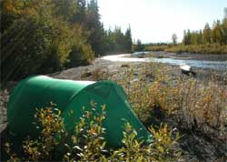
Comfortably late
the next morning I successfully escaped back down stream, careful
to not look where a moose might be, until I got below the cut-off
loop. The 11 rowdy mergansers had waited for me, and kept just
far enough ahead of me to put on a show then get around a bend
to wait for me again.
On a calm day, the only thing that makes a loud branch-breaking
snap in these woods, is a moose, bear or mammoth. The loud snap
was ahead of me a short ways as I floated down a calm section
of the creek. You can look right at a moose in the trees, and
not see it, until it breaks another branch while eating leaves.
It was a cow moose. We looked at each other as I floated by a
few feet from it. Down stream a bit I pulled over, and sneaked
back through the trees, hoping to see a bull with the cow, and
saw what you immediately figured out from the previous moose story.
Except for the rock and log obstacles, and various combinations,
a few of them accelerating adrenaline production, the floating
down part of this creek travel is preferable to the trudging up
part, and enhances the imagery of a leisurely trip in paradise.
Some time about noon time I rounded a corner in slow flowing
water, and saw a small bull moose on the bank, in full view of
course. After the fumbling around part, for the rifle, and confusion
as to the decision of whether to make movement to paddle to the
best spot, or drift to an adequate spot on the bank, I chose to
drift. Then the kayak slightly brushed against a small old tree
trunk at water
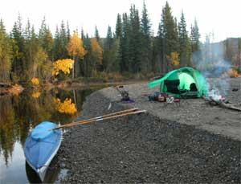
level,
protruding out from the shore. It just as well have been a siren
and bells to those prior described moose ears. The moose immediately
looked right at me, but I shortly floated behind a bush on the
bank, reached the bank at a precarious spot, got out of the kayak,
stood in an awkward position on a stump protruding over deep water,
and shot the moose.
There were the years and places I had to pack heavy loads of
moose meat 3 days, and the year I had to carry them 7 steps, and
the year I had to carry them 3 steps. This year I had to turn
around and set the sacks of meat in the kayak. Desperate.
There was the moment while butchering the moose, vulnerable
to the large bear tracks that surrounded me and lurked in the
brush, at which a crashing sound in the adjacent trees effected
a faster-than-light exchange of my butchering knife for my moose
rifle that was now a bear rifle, while the adrenaline obscured
my perception of the breeze that had apparently blown down a sizable
tree that had waited for that moment. There were at least three
ents in the area, judging from the tree laughter I heard.
By evening the moose was in the kayak, but I had not finished
the wine.
I floated down stream for an hour or so, away from lurking
bear tracks, camped at a place I should have camped on the way
up because it was so nice, set up the folding chair, and uncorked
a superlative bottle of wine, if you can imagine that.
Did I mention that the northern lights had enhanced the previous
two nights, and were now full-on, north horizon to south sky,
multiple bands dancing with cascading swirls? They were too much
to see looking in any one direction so I got dizzy turning around
trying to see them all as much as possible while they were swirling
around too. Yet another good reason to enjoy the wine fad out
in the far north wildlands, standing on a creek shore gawking
at the night sky until your neck gets sore or a bug flies into
your mouth agape.
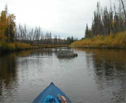
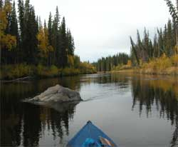
On
the morrow I enjoyed another day of the 11 Rowdy Mergansers Show
by the troupe of 11 rowdy mergansers who where waiting for me
just down stream. The 20 or so salmon were at their spawning bed,
still doing the spawning show, and moved only a little to one
side as I floated overhead.
At each shallow place in the creek I was thankful that it was
not a large moose in the kayak I had to drag over the rocks.
Somehow time slowed down in proportion to the wine I had yet
to drink, delaying my schedule. Upon arriving at my First Night
Secret Creek Camp, mid afternoon, I debated the issue for a nano
duration, and camped immediately in sunshine and fall colors.
Almost shot the top off another bottle of wine, with my .44, because
it took awhile to find the corkscrew. The object of the wine thing
was to reduce the weight of the kayak, because I had to add the
weight of the mammoth bone piece. Even at higher water, and a
small moose load, the creek has many shallow fans that require
dragging the kayak over the rocks. Those do not show up in the
photos, on account as the photographer had to help drag the kayak.
Apparently having been scheduled for the trip, the 11 rowdy
mergansers were waiting for me the next day, to again put on the
11 Rowdy Merganser Show each time I came around a bend. And for
some reason of odd circumstance or a cosmic message yet beyond
my understanding, each year I have encountered a lone Canadian
goose standing on the bank of this creek. Near the end of the
trip a lone Canadian goose stood on the bank and watched me float
by.
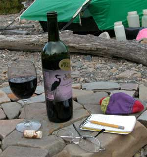
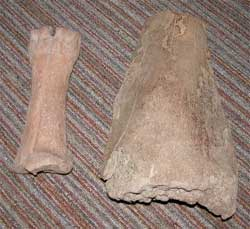
That
last photo is of the mammoth femur fragment, next to one of the
bison bones I found on Secret Creek a couple years ago. Not a
scrap of meat on them, and I still carried them back. But they
are always good for old bone soup.
That's it. That's it. Next year I gotta find another place
to chase moose, for the adventure of it.
Ice Dungeon...

 Ya
fer good grief sakes. I gotta do this, I gotta do that. I was
supposed to have already overthrown the government. I don't get
paid, and I am late again. Now I gotta write last week's ice dungeon
story. That means I have to develop the pixels in my camera somewhere
on the floor, among a smattering of other projects, including
a really cool one I should really do now, and another one too.
Ya
fer good grief sakes. I gotta do this, I gotta do that. I was
supposed to have already overthrown the government. I don't get
paid, and I am late again. Now I gotta write last week's ice dungeon
story. That means I have to develop the pixels in my camera somewhere
on the floor, among a smattering of other projects, including
a really cool one I should really do now, and another one too.
I went to the No Notice Monday Night Function, and got handed
a disc with some ice dungeon pics, so now I gotta write the story
because I think I said I would.
Some time ago, after an exceptional bottle of wine, after a
dozen or so mediocre bottles of wine at an Every Thursday Night
Barbecue At Dick Flaharty's, I said I would go along on an ice
cave function in Secret Glacier, that has a big open easy obvious
walk-in main terminus ice cave entrance, ten minutes walking from
the car. Usually I can script the script to bag-out of whatever
I said I would do, before it happens. This time I failed abjectly,
and was faced with my apparent obligation too late to bag out.
If that ever happens for my overthrow the government thing, you
are going to wake up to an honest government, and anarchy will
therefore reign, much to your delight. But that project requires
excruciatingly boring paperwork process, so you will most likely
have to save yourself from the various governments you so foolishly
support, including you government chaps.
If you want to understand the laughably primitive condition
of the intellectually void humans, of no worth for saving them
from themselves, consider how many Nobel Peace Prizes they have
awarded to themselves.
It was another hasty trip to the dungeon, just to make sure
nothing was down there. An empty dungeon is a good thing. Wine,
meat and gasoline were secured for the endeavor. We drove into
the depths of the Alaska Range, albeit only as deep as the highway
on the surface. Therein we stopped at Dick's cabin, loaded the
larder on our backs, and set out through the snow-covered woods
on a trail once trod by Frodo and Samwise. We passed one Ent of
whom we knew, and perhaps others who noticeably paid no attention
to passing humans. Wild animals lurked back in the trees, watching
us.
We removed all the spike boards from around the cabin door
that grizzly bears have breached in the past. We opened the wine,
then the door, and proceeded to party.

 Late
into the depths of the Alaska Range winter night, we surpassed
even our previous zenith of whatever we discussed while enjoying
some of the finest Alaska cabin culinary artistry ever graced
with the magnitude of whatever was in those bottles on sale.
Late
into the depths of the Alaska Range winter night, we surpassed
even our previous zenith of whatever we discussed while enjoying
some of the finest Alaska cabin culinary artistry ever graced
with the magnitude of whatever was in those bottles on sale.
Not only did we recover, but we were on the way to the dungeon
first thing the following noon.
Hip waders. Is it not embarrassing to be a fully qualified
egotistical ice caver, in Alaska, therefore more likely to be
festooned in the latest models of the most whizgaget day-glow
lime green plastic titanium ice caving gear, which we cannot afford
but sounds good, and instead have to put on hip waders, with clunky
old fashioned crampons, because we were going to wade on ice and
rocks, upstream, through a creek coming out of a glacier, and
call that ice caving? Pitiable. That is why I wanted to bag out.
Real ice cavers wear climbing boots and do not touch water until
it is frozen. We had one real climber with real climbing boots,
outers, put over a drysuit, but the suit looked baggy so the rest
of us retained our comparative ice caving image.
Worse. Not even around the first corner the ceiling got so
low, and the water got so high, me bent over with water lapping
at my beard and elbows, that I had to abandon my thick pack full
of stuff including the camera, wine and cigars.

 Joyce
took most the pictures, including the one of we three in the creek
before the ceiling lowered at the first corner. She had the good
sense to stay outside the cave, and play on the top of the glacier
while we were lost somewhere underneath, albeit as usual.
Joyce
took most the pictures, including the one of we three in the creek
before the ceiling lowered at the first corner. She had the good
sense to stay outside the cave, and play on the top of the glacier
while we were lost somewhere underneath, albeit as usual.
Shortly thereafter, bereft of my camera abandoned with my pack,
the ice ceiling vaulted up beyond that which would impress even
the old cathedral architects, and God herself if she had not designed
it with a few trillion others around the universe. So just imagine
us standing thigh deep in the middle of a creek running through
an expansive convolution of pure glacier ice parted by the sensuous
flow of water gone wild.
There was the matter of the undersides of a few large boulders,
directly overhead, hanging from the ice, mostly melted out, but
we would lean to one side in passing. Some places the water came
around some sharp corners, and curled under the ice wall it hit.
We leaned away from those places too. The silt-laden water roiling
around  bolders
and large blocks of fallen ice offered a footing game more wisely
played on a video screen. I gotta learn how to play those video
games in a warm dry room with a glass of wine. There were sharp
turns and long curves that may have made a full circle in the
dark. The high vaulted ceiling dropped down another time to rub
our noses against the water, much to our consideration of its
volume trend.
bolders
and large blocks of fallen ice offered a footing game more wisely
played on a video screen. I gotta learn how to play those video
games in a warm dry room with a glass of wine. There were sharp
turns and long curves that may have made a full circle in the
dark. The high vaulted ceiling dropped down another time to rub
our noses against the water, much to our consideration of its
volume trend.
It was all very straightforward weaving through the glacier
against the hydrological and political currents. We occasionally
came upon a nice pebble beach where we would sit awhile, turn
off the headlights, and search for any errant photon, without
success. At a significant but unknown distance into the glacier
we rhetoricalized ourselves into perceiving the effects of the
common lack of ice cave oxygen with elevated methane from 500
year old decaying pollen saturating the glacier ice, but pressed
on with our self-impaired judgment and diminishing batteries,
as usual. There were no obstacles worthy of our grand skills,
until the water got to the hip wader limit, which was the limit
of our skills.
In the black void beyond the ability of our headlamps, upstream
around another corner that was certainly there, we heard some
sounds that you do not want to ever hear, but we saw nothing and
gave the 

 sounds
no chance to come into sight.
sounds
no chance to come into sight.
Walking down a thigh deep swift stream is a lot easier than
walking up it.
That's it. That's it. We were outta there. Nothing was in the
ice dungeon. That is the full report, for which we are thankful.
Did I mention that we were playing on the Denali Fault?


There may be more stories after I see what-all on my desk
is too late to get done anyway.
Stories 11
Stories 12
Stories 13
Stories 14
Stories 1
Stories 2
Stories 3
Stories 4
Stories 5
Stories 6
Stories 7
Stories 8
Stories 9
Places
Concepts
Smoking
Smoke Photos
Smoke Others
Stuff
Links
Home